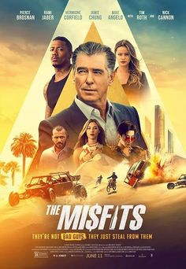
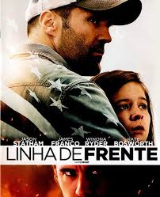
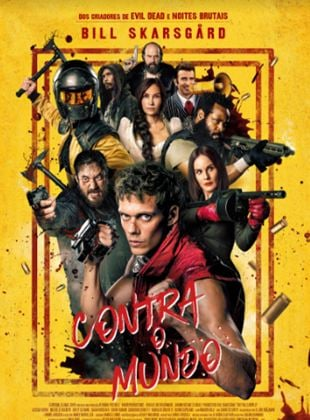

Lista de Excelentes Filmes

Após ser recrutado por um grupo de ladrões, o renomado criminoso Richard Pace se envolve em um
elaborado roubo de ouro que promete ter implicações de longo alcance em sua vida e na vida de
muitos outros.

Phil Broker é um ex-agente do departamento de narcotráficos. Hoje vive tranquilo ao lado da
filha, para fugir de um passado conturbado. No entanto, quando descobre que o submundo das
drogas e a violência assombram a pequena comunidade onde foram morar, percebe que terá que
voltar à ativa para salvar sua família e a cidade.

Depois que sua família é assassinada, Boy, um surdo com uma imaginação vibrante, é treinado por
um misterioso xamã para se tornar um instrumento de morte.